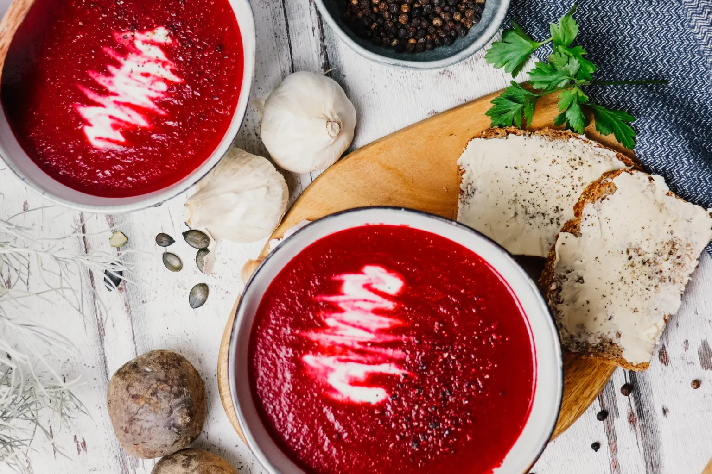

Kategorie: Suppen
Zubereitung: 35 Minuten
Portion: ca. 3-4 Portionen
Zutaten:
- 1 Zwiebel
- 1-2 Knoblauchzehen
- 450g Rote Bete
- 2 mittlere Kartoffeln
- 500ml Gemüsebrühe
- 200ml Pflanzenmilch (Hafermilch)
- Salz & Pfeffer
- Dill (getrocknet)
- 1 Stück (ca. 20g) frischer Meerrettich
- etwas Zitronensaft
- 2 EL veganen "Schmand"
Zubereitung:
- Die frischen roten Beten vom Grün befreien, großzügig schälen, in Scheiben und dann in Würfel schneiden. Die Kartoffeln waschen und grob würfeln. Die Zwiebel und die Knoblauchzehen schälen und fein würfeln.
- Etwas Olivenöl in einem großen Topf geben, Rote Bete-Würfel, Kartoffeln, Zwiebeln und Knoblauch dazugeben und unter Rühren 2–3 Minuten andünsten. Anschließend 500ml Gemüsebrühe zugießen und aufkochen. Zugedeckt ca. 15-20 Minuten köcheln lassen, bis das Gemüse weich ist.
- Den Meerrettich schälen und auf einer Küchenreibe fein reiben. Direkt mit etwas Zitronensaft vermengen, damit er sich nicht braun verfärbt. Die pflanzliche Creme (Schmand) unterrühren und mit Dill, Salz und Pfeffer abschmecken.
- Die Suppe nun mit einem Stabmixer fein pürieren. Mit Salz und Pfeffer abschmecken und die Pflanzenmilch dazugeben. Nochmals kurz erhitzen und ziehen lassen.
Die fertige Suppe anrichten und jeweils ca. 1 TL Meerrettichcreme spiralförmig einrühren. Dazu schmeckt selbstgebackenes Brot ganz wundervoll.
Mein Tipp: Rote Bete färbt stark, daher beim Zubereiten am besten Küchenhandschuhe tragen.